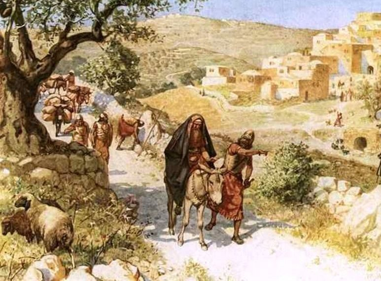

2 Samuel 16 — La Traducción Mister

2 Samuel 16. El título es el que lleva la reproducción. La cabeza cubierta es la señal del versículo 30 del capítulo anterior, y el hombre que señala puede ser Simei o un guía; el cuadro no tiene piedras y no lo dice. Hole dibujó un camino tranquilo, y el polvo y las piedras del capítulo quedan fuera.

Notas del traductor — versículo por versículo
Pan y pasas en un camino. «Un par de asnos aparejados, y sobre ellos doscientos panes y cien racimos de pasas y cien de fruta de verano, y un odre de vino»: el regalo de Abigail a David fue doscientos panes, cien racimos de pasas y doscientas tortas de higos en asnos (1 Samuel 25:18, ya en estas páginas), así que el camino trae a David el mismo pan y las mismas pasas una segunda vez. «un par de asnos» está en dos versículos, este y Jueces 19:3 (ya en estas páginas). El hebreo qáyits es «fruta de verano». La RV 1909 dice «cien panes de higos secos». La NVI dice «cien tortas de higos». La TNM 1987 dice «cien cargas de fruta de verano». El griego de Rahlfs tiene phoinikes, «dátiles». Para el vino la RV 1909 dice «un cuero de vino». La TNM 1987 dice «un jarrón de vino». La NVI dice «un odre de vino».
El joven de Mefiboset. «Siba, el joven de Mefiboset»: el hebreo es na‘ar, y en 2 Samuel 9:10 (ya en estas páginas) el mismo hombre tiene quince hijos y veinte siervos, así que la palabra es un rango y no una edad. La RV 1909 dice «el criado de Mephi-boseth». La TNM 1987 dice «el servidor de Mefibóset». La NVI dice «el criado de Mefiboset». El griego de Rahlfs pone el encuentro «un poco más allá de Ros», apo tēs Rhōs, el nombre que dio a la cumbre en el capítulo anterior.
El reino de mi padre. «Mira, se queda en Jerusalén; porque dijo: “Hoy la casa de Israel me devolverá el reino de mi padre”»: el único testigo de estas palabras es Siba, y el capítulo no dice que Mefiboset las dijera. Su padre fue Jonatán, que nunca reinó, y Saúl era su abuelo; el hebreo av puede decir cualquiera de los dos. La NVI dice «el reino de su abuelo». La RV 1909 dice «el reino de mi padre». La TNM 1987 dice «el regir real de mi padre». El hebreo dice también «el hijo de tu señor». La NVI dice «el nieto de tu amo». La RV 1909 dice «el hijo de tu señor».
Tuyo es todo. «Mira, tuyo es todo lo que es de Mefiboset»: en 2 Samuel 9:9 (ya en estas páginas) David había dicho a este mismo Siba «Todo lo que era de Saúl y de toda su casa lo he dado al hijo de tu señor», y la frase se vuelve ahora al revés sin hacer ninguna pregunta. La respuesta de Siba es hishtajaveti, «me postro». La NVI dice «Humildemente me postro ante usted». La RV 1909 dice «inclinándose». La TNM 1987 dice «De veras me inclino». La NVI dice también «todo lo que antes fue de Mefiboset ahora es tuyo». La versión de Mefiboset está en 2 Samuel 19:25–31 (ya en estas páginas).
Bahurim, y un hombre del clan de Saúl. «El rey David llegó hasta Bahurim; y mira, de allí salía un hombre de la familia de la casa de Saúl»: Bahurim es donde Paltiel siguió a Mical llorando y Abner le dijo «Anda, vuélvete» (2 Samuel 3:16, ya en estas páginas). El nombre del padre de Simei, Gera, es también el del padre de Ehúd, un benjaminita (Jueces 3:15, ya en estas páginas), y el texto no dice nada más de Simei. El hebreo yotsé yatsó es un participio doblado por su infinitivo, «saliendo y saliendo», un hombre que no se detiene. La RV 1909 dice «salía maldiciendo». La TNM 1987 dice «saliendo e invocando el mal al salir». La NVI dice «Este se puso a maldecir».
Los valientes a su derecha y a su izquierda. «Tiraba piedras a David y a todos los siervos del rey David; y todo el pueblo y todos los valientes estaban a su derecha y a su izquierda»: el hebreo tiene un simple «y». La RV 1909 dice «estaban á su diestra y á su siniestra». La NVI dice «a pesar de que las tropas y la guardia real rodeaban al rey». La TNM 1987 dice «estaban a su derecha y a su izquierda».
Hombre de sangres. «¡Sal, sal, hombre de sangres, y hombre de la nada!»: el hebreo damím es el plural de sangre, y significa sangre derramada y la culpa por ella. «el hombre de las sangres», con el artículo, está en un versículo, este; el versículo 8 lo repite sin el artículo. La NVI dice «¡Asesino! ¡Canalla!». La TNM 1987 dice «oh hombre culpable de sangre y hombre que no sirve para nada». La RV 1909 dice «varón de sangres, y hombre de Belial».
Todas las sangres de la casa de Saúl. «Jehová ha hecho volver sobre ti todas las sangres de la casa de Saúl, en cuyo lugar has reinado»: el hebreo dice que la sangre se vuelve sobre David y no dice que él la derramara. La RV 1909 dice «Jehová te ha dado el pago de toda la sangre de la casa de Saúl». La TNM 1987 dice «ha hecho volver sobre ti toda la culpa de sangre por la casa de Saúl». La NVI dice «por haber masacrado a la familia de Saúl». El libro hace decir a David «Yo y mi reino somos inocentes delante de Jehová para siempre de la sangre de Abner» (2 Samuel 3:28) y decir al amalecita «Tu sangre sea sobre tu propia cabeza» (2 Samuel 1:16), ambos ya en estas páginas; en este capítulo no responde a la acusación. «Y mira, estás en tu mal»: el sustantivo es ra‘á, el mal que David temía que Absalón hiciera caer sobre la ciudad (2 Samuel 15:14, ya en estas páginas). La RV 1909 dice «sorprendido en tu maldad». La TNM 1987 dice «en tu calamidad». La NVI dice «Has caído en desgracia».
Este perro muerto. «¿Por qué maldice este perro muerto a mi señor el rey? Déjame pasar, por favor, y le quitaré la cabeza»: «el perro muerto» está en dos versículos, este y 2 Samuel 9:8 (ya en estas páginas), donde es la palabra de Mefiboset para sí mismo, y en el versículo 4 de este capítulo David acaba de dar los bienes de Mefiboset. La RV 1909 dice «quitaréle la cabeza». La NVI dice «le corte la cabeza». La TNM 1987 dice «quitarle la cabeza».
Qué tengo yo con ustedes. «¿Qué tengo yo con ustedes, hijos de Sarvia?»: mah-lí valakhém es el modismo de Jefté al rey de Amón (Jueces 11:12, ya en estas páginas), y David ha dicho de los mismos hermanos que son «demasiado duros para mí» (2 Samuel 3:39, ya en estas páginas); se lo dice otra vez en 2 Samuel 19:23 (ya en estas páginas). La RV 1909 dice «¿Qué tengo yo con vosotros, hijos de Sarvia?». La NVI dice «Esto no es asunto mío ni de ustedes, hijos de Sarvia». La TNM 1987 dice «¿Qué tengo yo que ver con ustedes, hijos de Zeruyá?». «Porque maldice así, porque Jehová le ha dicho: “Maldice a David”»: el texto escrito tiene vekhí ki y la tradición de lectura tiene ki, y el hebreo no tiene «que maldiga». La RV 1909 dice «El maldice así, porque Jehová le ha dicho que maldiga á David». La NVI dice «A lo mejor el Señor le ha ordenado que me maldiga». La TNM 1987 dice «Así, pues, que invoque él el mal».
Mis entrañas, mi ojo. «Mi hijo, que salió de mis entrañas, busca mi alma»: me‘áy son los órganos de dentro y néfesh es el alma o la vida. La RV 1909 dice «mi hijo que ha salido de mis entrañas, acecha á mi vida». La TNM 1987 dice «mi propio hijo, que ha salido de mis mismas entrañas, anda buscando mi alma». La NVI dice «Si el hijo de mis entrañas intenta quitarme la vida». «Quizá mire Jehová mi ojo»: el texto escrito del versículo 12 tiene b‘wny, que las consonantes dejan leer «mi iniquidad» (avoní) o «mi aflicción» (oní), y la tradición de lectura tiene be‘einí, «mi ojo», que es la que traduzco. La RV 1909 dice «mirará Jehová á mi aflicción». La NVI dice «toma en cuenta mi aflicción». La TNM 1987 dice «vea Jehová con su ojo». El griego tiene en tē tapeinōsei mou, «en mi humillación». El verbo de la maldición de Simei, heshív, «ha hecho volver» las sangres sobre David, vuelve en la esperanza de David, «Jehová me devuelva bien en lugar de su maldición». La NVI dice «me paga con bendiciones las maldiciones». La TNM 1987 dice «realmente me restaure el bien en vez de su invocación de mal».
El costado del monte, y aliento. «Simei iba por el costado del monte, frente a él, andando y maldiciendo, y tirando piedras frente a él, y empolvando con polvo»: tsélá es «costado», la palabra de Génesis 2:21, y aquí es el de un monte. «empolvando con polvo» (ve‘ippár be‘afár) está en un versículo, un verbo hecho del sustantivo. La NVI dice «levantando polvo». La RV 1909 dice «esparciendo polvo». La TNM 1987 dice «tiró mucho polvo». «Llegó el rey y todo el pueblo que estaba con él, cansados; y tomó aliento allí»: los cansados son ayefím, de la raíz del «el cansado» de Siba en el versículo 2, y el verbo vayinnáfesh es el verbo del sábado de Éxodo 31:17 (ya en estas páginas). El hebreo no dice dónde llegaron. La NVI dice «llegaron agotados a su destino». La RV 1909 dice «descansaron allí». La TNM 1987 dice «se refrescaron allí».
El hombre de Israel. «Y Absalón, y todo el pueblo, el hombre de Israel, llegaron a Jerusalén; y Ahitofel con él»: el hebreo tiene el singular, ish yisrael, como en 15:13 (2 Samuel 15:13, ya en estas páginas), con un verbo en plural. La RV 1909 dice «todo el pueblo, los varones de Israel». La NVI dice «todos los israelitas que lo seguían». La TNM 1987 dice «toda la gente, los hombres de Israel».
Viva el rey. «¡Viva el rey! ¡Viva el rey!»: «viva el rey» (yehí hamélekh) está en siete versículos: 1 Samuel 10:24, este versículo, 1 Reyes 1:25, 34 y 39 (todos ya en estas páginas), 2 Reyes 11:12 y 2 Crónicas 23:11. El hebreo dice «el rey» y no dice de quién. La RV 1909 dice «Viva el rey, viva el rey». La NVI dice «¡Viva el rey! ¡Viva el rey!». La TNM 1987 dice «¡Viva el rey! ¡Viva el rey!».
Tu bondad para con tu amigo. «¿Es esta tu bondad para con tu amigo? ¿Por qué no fuiste con tu amigo?»: Absalón usa jésed, la palabra que David usó con Itai en 15:20, y dice «tu amigo» dos veces. La RV 1909 dice «¿Este es tu agradecimiento para con tu amigo?». La NVI dice «¿Así muestras tu lealtad a tu amigo?». La TNM 1987 dice «¿Es esta tu bondad amorosa para con tu compañero?».
De él seré yo. «No; sino al que Jehová escogió, y este pueblo, y todo hombre de Israel, de él seré yo, y con él me quedaré»: las palabras «al que Jehová ha escogido» son las de Samuel en 1 Samuel 10:24, justo antes de que el pueblo grite «¡Viva el rey!». El texto escrito tiene lo, «no», y la tradición de lectura tiene lo, «de él»; suenan igual, y el griego tiene autō esomai, «seré suyo». La RV 1909 dice «de aquél seré yo, y con aquél quedaré». La TNM 1987 dice «de él llegaré a ser yo, y con él moraré». La NVI dice «Así que yo me quedo con usted». «Y en segundo lugar, ¿a quién serviré? ¿No es delante de su hijo?»: las palabras pueden oírse de dos maneras, y Absalón oye una de ellas. La RV 1909 dice «¿no es á su hijo?». La NVI dice «Serviré al hijo». La TNM 1987 dice «¿No es delante de su hijo?».
Den consejo. «Den para ustedes consejo: ¿qué haremos?»: el verbo havú está en plural, aunque Absalón se ha vuelto a Ahitofel. La NVI dice «Danos tu consejo». La TNM 1987 dice «Ustedes, den consejo de parte suya». La RV 1909 dice «Consultad qué haremos».
Entra a las concubinas de tu padre. «Entra a las concubinas de tu padre, a quienes dejó para guardar la casa»: son las diez de 15:16, dejadas «para guardar la casa» (2 Samuel 15:16, ya en estas páginas), y «entrar a» es el modismo hebreo. La RV 1909 dice «Entra á las concubinas de tu padre». La NVI dice «Acuéstese usted con las concubinas». La TNM 1987 dice «Ten relaciones con las concubinas de tu padre». «Te has hecho un hedor para tu padre»: nivásheta es el tercer versículo en que está la forma «se ha hecho un hedor», después de 1 Samuel 13:4 y 2 Samuel 10:6 (ambos ya en estas páginas), y los tres están en Samuel. La RV 1909 dice «te has hecho aborrecible á tu padre». La NVI dice «se ha hecho odioso ante su padre». La TNM 1987 dice «te has hecho hediondo a tu padre». «Las manos de todos los que están contigo se fortalecerán» es la palabra de David a Jabes de Galaad, «sean fuertes sus manos» (2 Samuel 2:7, ya en estas páginas).
Una tienda en el terrado. «Le extendieron a Absalón la tienda sobre el terrado; y entró Absalón a las concubinas de su padre ante los ojos de todo Israel»: «la tienda sobre el terrado» está en un versículo. El terrado es donde David se paseó y vio a Betsabé (2 Samuel 11:2), y Natán había dicho «tomaré tus mujeres delante de tus ojos y las daré a tu prójimo, y él se acostará con tus mujeres a la vista de este sol» y «yo haré esto delante de todo Israel» (2 Samuel 12:11–12), todo ya en estas páginas; la palabra de Natán es «prójimo», y aquí no se nombra. La RV 1909 dice «en ojos de todo Israel». La TNM 1987 dice «ante los ojos de todo Israel». La NVI dice «a la vista de todos los israelitas». Para la tienda la NVI dice «instalaron una tienda de campaña». La TNM 1987 dice «le asentaron una tienda».
Como cuando un hombre inquiría de la palabra de Dios. «El consejo de Ahitofel, que aconsejaba en aquellos días, era como cuando un hombre consulta la palabra de Dios»: «como cuando un hombre consulta la palabra» está en un versículo, y la comparación es con un oráculo y no con la sabiduría. La RV 1909 dice «era como si consultaran la palabra de Dios». La NVI dice «era como oír la palabra misma de Dios». La TNM 1987 dice «tal como cuando un hombre inquiría de la palabra del Dios [verdadero]». Era así «tanto para David como para Absalón», un consejero para dos reyes, y la oración de David en 2 Samuel 15:31 (ya en estas páginas) iba contra exactamente esto. El griego de Rahlfs tiene el consejo dado «en los primeros días», en tais hēmerais tais prōtais, donde el hebreo tiene «en aquellos días».
Patrones que vale la pena llevar adelante
Donde esta traducción mantiene las palabras exactas y distintas: «el joven de Mefiboset»; «un par de asnos»; «fruta de verano»; «saliendo y saliendo»; «hombre de sangres» y «hombre de la nada»; «todas las sangres de la casa de Saúl»; «este perro muerto»; «¿Qué tengo yo con ustedes?»; «mis entrañas»; «el costado del monte»; «empolvando con polvo»; «tomó aliento»; «Viva el rey»; «un hedor»; «ante los ojos de todo Israel»; «la palabra de Dios»; y las lecturas vocalizadas «mi ojo», «de él seré yo» y «porque maldice así», con las formas escritas en las notas.
Ecos pagados. Los panes y las pasas de Abigail (1 Samuel 25:18); el par de asnos del levita (Jueces 19:3); los quince hijos de Siba y la tierra dada a Mefiboset (2 Samuel 9:9–10); Paltiel en Bahurim (2 Samuel 3:16); Ehúd hijo de Gera (Jueces 3:15); la sangre de Abner y la sangre del amalecita sobre su cabeza (2 Samuel 3:28; 1:16); el mal que David temía (2 Samuel 15:14); el perro muerto (2 Samuel 9:8); «¿Qué hay entre tú y yo?» (Jueces 11:12) y los hijos de Sarvia demasiado duros para David (2 Samuel 3:39); el verbo del sábado para tomar aliento (Éxodo 31:17); las diez concubinas dejadas para guardar la casa (2 Samuel 15:16); «un hedor» (1 Samuel 13:4; 2 Samuel 10:6); «sean fuertes sus manos» (2 Samuel 2:7); «Viva el rey» (1 Samuel 10:24; 1 Reyes 1:25, 34, 39) y «al que ha escogido Jehová» (1 Samuel 10:24); el terrado y la palabra de Natán (2 Samuel 11:2; 12:11–12); y la oración de David contra Ahitofel (2 Samuel 15:31).
Ecos plantados. La respuesta de Mefiboset y la tierra dividida (2 Samuel 19:25–31, ya en estas páginas); «¿Qué tengo yo con ustedes, hijos de Sarvia?» otra vez (2 Samuel 19:23, ya en estas páginas); Simei en el Jordán, perdonado y luego juzgado (2 Samuel 19:17–24, ya en estas páginas; 1 Reyes 2:8–9, 36–46); Jehová ordenando que se deshiciera el consejo de Ahitofel (2 Samuel 17:14, ya en estas páginas); las concubinas encerradas hasta el día de su muerte (2 Samuel 20:3, ya en estas páginas); el fin de Ahitofel (2 Samuel 17:23, ya en estas páginas); y «Viva el rey» para Joás (2 Reyes 11:12; 2 Crónicas 23:11). Ninguno de los demás está todavía en estas páginas.
Siguiente en este libro: 2 Samuel 17 — Ahitofel aconseja doce mil hombres esa noche contra un David cansado; Absalón llama a Husai, que aconseja juntar a todo Israel e ir en persona, y Absalón y todos los hombres de Israel dicen que el consejo de Husai es mejor, porque Jehová había ordenado deshacer el buen consejo de Ahitofel; Husai avisa a Sadoc y Abiatar, Jonatán y Ahimaas llevan la palabra desde En-rogel y se esconden en un pozo en Bahurim, David cruza el Jordán, Ahitofel arregla su casa y se ahorca, y a David en Mahanaim le traen camas y pan Sobi, Maquir y Barzilai.